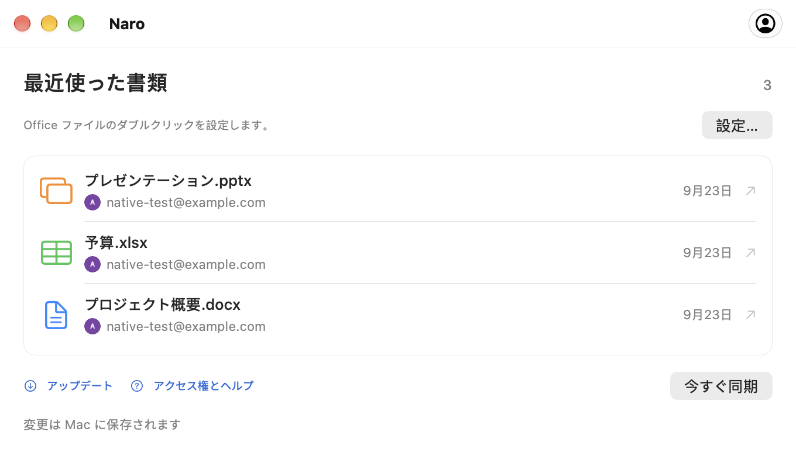

Google アカウントを接続します。
ブラウザーを通じてサインインし、アカウント設定で Naro を Office ファイルの既定のアプリにします。
Office ファイル、macOS に接続
Naro は、Word、Excel、PowerPoint のファイルを Google ドキュメント、スプレッドシート、スライドで開き、アプリの実行中およびオンライン中に保存された変更を Mac に同期して戻す macOS アプリです。
Apple Silicon・macOS 26以降で利用可能

いつもの操作から
いつものダブルクリックで、反対側に Google のエディターが表示されます。
ブラウザーを通じてサインインし、アカウント設定で Naro を Office ファイルの既定のアプリにします。
Naro はファイルを Google ドライブにアップロードし、一致するエディターを開きます。複数のアカウントがある場合は、最初にアバターを選択します。
Naro はオンラインで実行中、Google に保存された変更をチェックし、ローカルに書き戻してバックアップを保持します。
3人の編集者。アプリは 1 つ。
ドキュメント、スプレッドシート、プレゼンテーション。 1ファイルあたり最大100MB。

ローカルドキュメントからGoogleドキュメントへ。
DOC · DOCX
Google スプレッドシートでスプレッドシートを開きます。
XLS · XLSX
プレゼンテーションを Google スライドに取り込みます。
PPT · PPTXドキュメントに使用する Google アカウントを接続します。 Naro はあなたの名前、メールアドレス、プロフィール写真を使用して、接続されているアカウントを表示し、適切なアカウントの選択を支援します。 Naro が Google パスワードを受け取ることはありません。
Naro でローカルの Office ファイルを開くと、そのファイルが Google ドライブにアップロードされ、ブラウザで Google のエディタが開きます。ドライブ アクセスにより、Naro は保存された変更を取得し、Mac に同期し直すことができます。アクセスは、ドライブ全体ではなく、Naro によって作成されたファイル、または Naro と明示的に共有されたファイルに限定されます。
ドキュメントは Mac と Google の間で直接やり取りされます。 Naro には、ドキュメントを受信する開発者が運営するサーバーはありません。サインイン トークンは macOS キーチェーンに残ります。
困ったときのガイド
最初のファイルのための短いガイド、
次のアカウントとすべてが同期されます。
知っておきたいこと
はい。 GitHub リリースから Naro をダウンロード、または Homebrew でインストールします。
brew install --cask plexideas/tap/naro。ダウンロードには Apple Developer ID 署名がないため、macOS では初回起動を明示的に許可する必要がある場合があります。
編集はブラウザの Google ドキュメント、スプレッドシート、またはスライドで行われます。 Naro は、Finder からファイルを開き、アカウントを選択し、Google に保存された変更を Mac に戻す処理を行います。
Naroは両方のバージョンを保持し、どちらを続行するかを尋ねます。また、ドキュメントを置き換える前にローカル バックアップも作成します。同期のために Naro を実行し、インターネットに接続したままにしておきます。
互換性は Google の Office エディターに依存します。複雑な書式設定、マクロ、その他の高度な機能は保持されない場合があります。 Google が古い DOC、XLS、または PPT ファイルをアップグレードすると、Naro はオリジナルと一緒に最新形式のコピーを保存します。ファイルを別の Google ネイティブ ドキュメントに変換しても、元のファイル リンクでは追跡されません。
Naro は、macOS 26 以降を実行する Apple Silicon Mac をサポートしています。アプリは、GitHub リリースの更新をチェックできます。更新ウィンドウからダウンロード、インストール、再起動するタイミングを選択します。